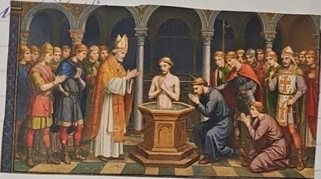
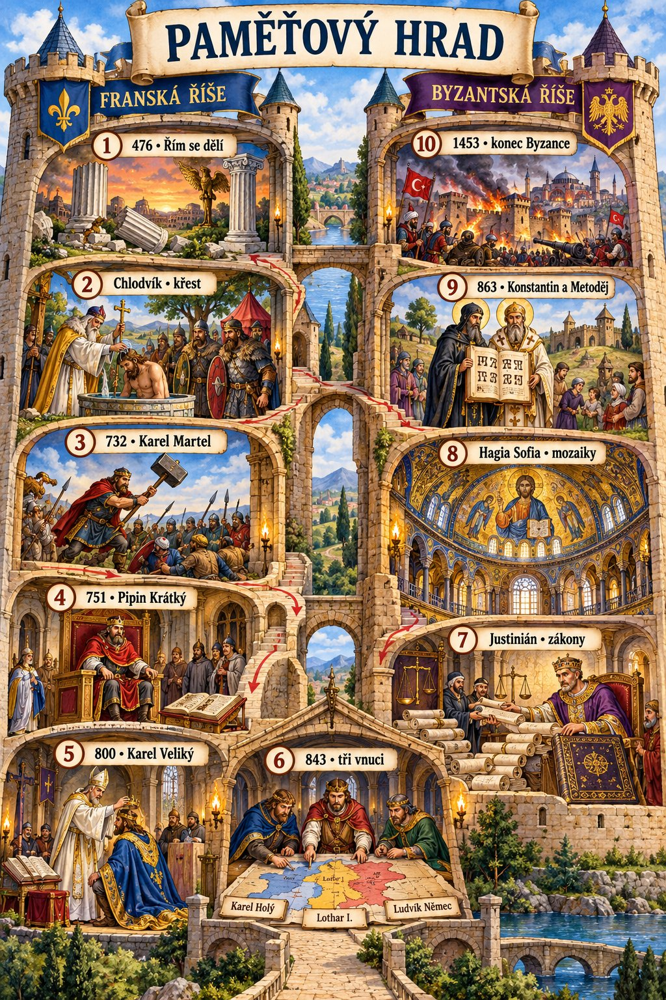
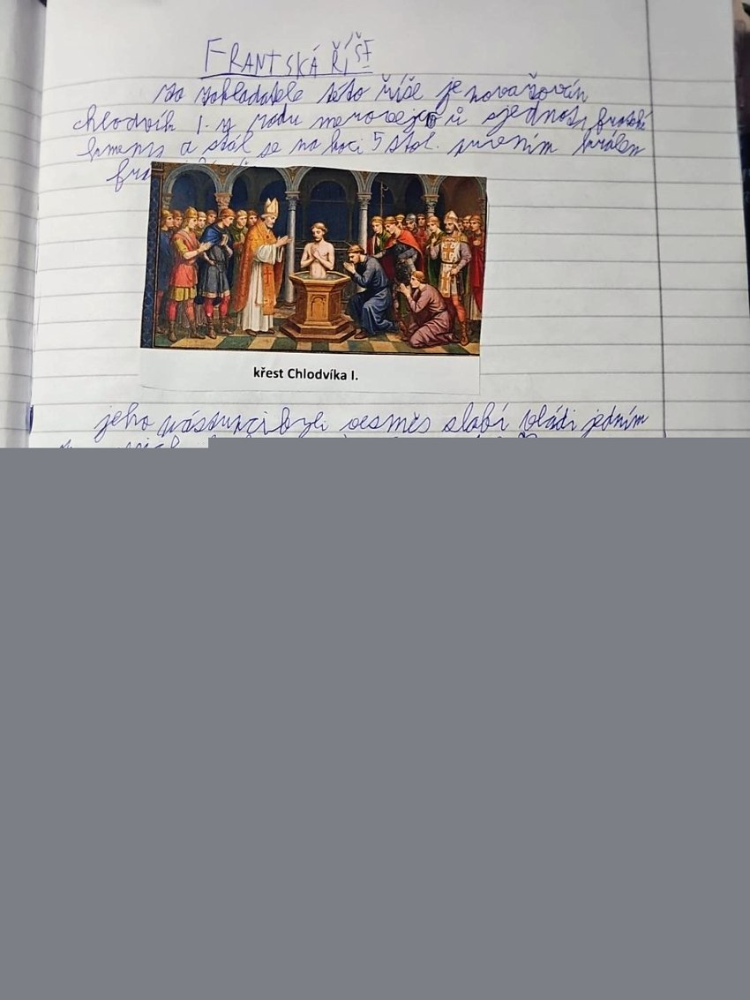
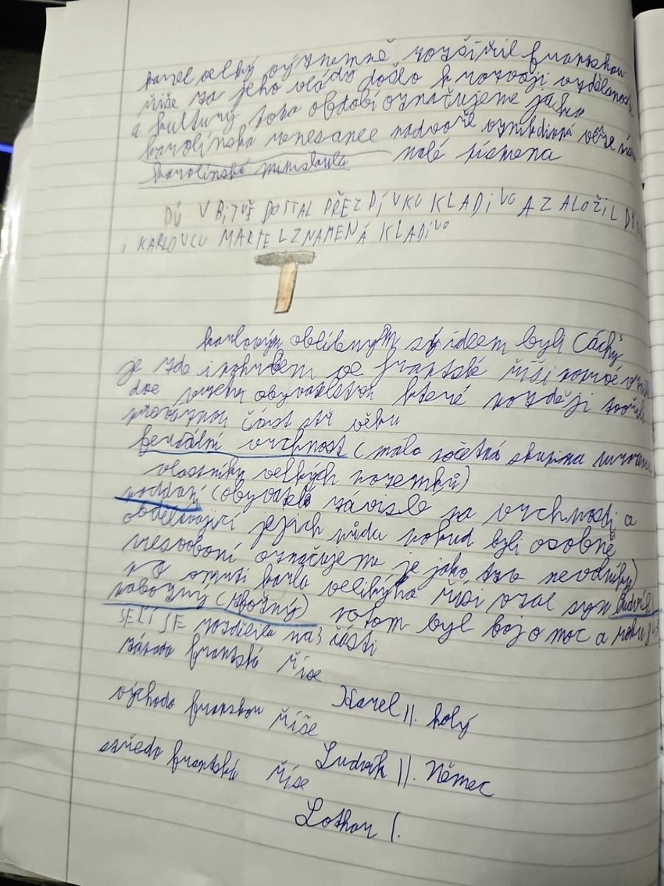

Franská říše
Jak vznikla

Po zániku Západořímské říše vznikala v západní Evropě germánská království. Chlodvík I. (vládl 481–511) z rodu Merovejců sjednotil velkou část Franků a přijal křesťanství. Získal tím podporu církve i části původního římského obyvatelstva.
Pozdější merovejští králové ztráceli moc. Důležití byli majordomové, původně správci královského dvora. Karel Martel jako majordomus porazil roku 732 vojsko Umajjovského chalífátu u Poitiers/Tours. Jeho syn Pipin Krátký se roku 751 stal králem: začala vláda Karlovců. Přezdívka Martel souvisí s kladivem.
Karel Veliký
Pipinův syn Karel Veliký vládl v letech 768–814 a rozšířil říši. Roku 800 jej papež v Římě korunoval císařem. Podporoval školy, vzdělance a opisování knih. Rozkvět vzdělanosti nazýváme karolinskou renesancí. V jejím prostředí se rozšířilo čitelné písmo karolinská minuskula. Důležitým Karlovým sídlem byly Cáchy.
Karelův syn Ludvík Pobožný vládl po jeho smrti. Jeho synové bojovali o moc a verdunskou smlouvou roku 843 si říši rozdělili:
| Vnuk Karla Velikého | Část říše | Přibližná souvislost s dnešní mapou |
|---|---|---|
| Karel Holý | západofranská | základ pozdější Francie |
| Ludvík Němec | východofranská | základ pozdějšího Německa |
| Lothar I. | středofranská | pás od Severního moře k severní Itálii |
Hranice a státy nebyly totožné s těmi dnešními. Středofranská část se dále dělila. Na východofranské království později navázala říše Oty I.
Pojmy ze zápisků
- Majordomus: správce královského dvora, který za slabých králů získal skutečnou politickou moc.
- Vrchnost: držitel panství a práv vůči poddaným; vztahy se v různých dobách lišily.
- Poddaní: lidé podléhající vrchnosti. Nelze všechny obyvatele rané Franské říše jednoduše označit za nevolníky.
- Karolinská renesance: obnova vzdělanosti v Karlově říši, nikoli renesance 15. a 16. století.
Zapamatuj si
Chlodvík sjednocuje a přijímá křest → Martel 732 vítězí u Poitiers → Pipin 751 zakládá královskou vládu Karlovců → Karel Veliký je 800 korunován císařem → vnuci dělí říši 843.

Opravy z poznámek
Bitva Chlodvíkova potomka Dagoberta I. se Sámovou říší se obvykle označuje jako bitva u Wogastisburgu, její přesné místo a datování nejsou jisté (často kolem 631/632). Vyprávění o „jednotných zákonech pro všechny obyvatele“ je pro tak rozmanitou a dlouho trvající říši příliš jednoduché. Přezdívku Kladivo měl Karel Martel; Karlovskou dynastii na královském trůně zahájil až jeho syn Pipin.
Zápis ze sešitu
Fotky stránek sešitu

